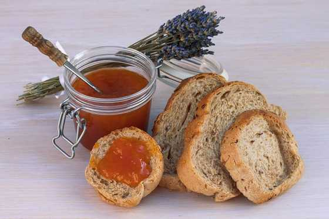
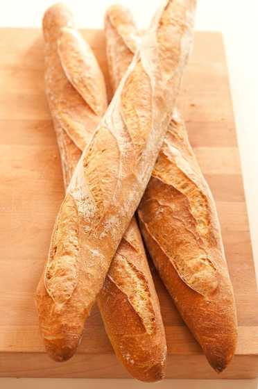

住宅街のパン屋 / 沖縄県浦添市伊祖
となりの
パン屋
やわらかいパンを、ご近所の食卓のとなりに。
浦添市伊祖の住宅街にあるパン屋です。営業時間などの詳しいことは準備中。最新の様子はInstagramをご覧ください。

お店のこと
住宅街の、気軽に寄れるパン屋さん
- 浦添市伊祖、浦城小学校の近くの住宅街にあります。
- 2022年11月(令和4年11月)に開店したと紹介されています。以前この場所にあった「ココベーグル」が閉店したあと、次のお店として開きました。
- 店長の中根伸夫さんは、脱サラ後にパン職人として修業された方と紹介されています。
- ソフト系のパンを中心に、お年寄りや子どもたちにも食べやすいパンをつくっていると紹介されています。
「となりのパン屋」という店名の由来は確認できていません。制作側のイメージとして、毎日の暮らしのすぐとなりにあるパン屋、という姿を思い描いてこのページを作りました。
出典: 琉球新報「気軽に寄れる町のパン屋さん となりのパン屋(浦添市伊祖)」ほか各種紹介ページ
パン
やさしい口あたりのパンたち
紹介記事などでは、田芋パンやちくわパンが話題に挙がっています。品ぞろえ・価格・焼き上がりの時間は準備中です。下の写真はすべてフリー素材のイメージで、お店の商品ではありません。

田芋パン(紹介されているパン)
沖縄らしい田芋を使ったパンとして紹介されています。詳細は準備中

ちくわパン(紹介されているパン)
ちくわパンが絶品との声が紹介されています。詳細は準備中

小さなやわらかパン
ソフト系のパンのイメージ。品ぞろえは準備中

朝ごはんのパン
朝から営業との紹介があります。営業時間は準備中





口コミ
こんな声が届きそうです
以下は制作側が作成したイメージ例で、実在のお客様の声ではありません。
やわらかくて、小さい子どもも食べやすそうでした。
住宅街にあって、散歩のついでに立ち寄りやすいです。
朝ごはん用に、いくつか選んで帰りました。